Learning from Adversity: Semantic-Aware Mask Refinement through Adversarial Perturbation
Keep your segmenter. Add Phoenix. Turn coarse, noisy masks into precise object boundaries with a model-agnostic refinement layer trained on realistic adversarial errors.
Phoenix takes an image and a noisy binary mask, then returns a cleaner mask. That small interface makes it useful as a post-processing layer, a data-quality step, or an on-demand vision tool.
Phoenix sits behind the existing segmentation service and refines its output. The upstream model remains untouched.
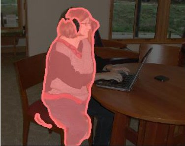
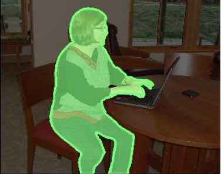
Evaluated across Mask R-CNN, SOLO, CondInst, RefineMask, Mask2Former, ViTDet, and MaskDINO.
refined = phoenix(image, coarse_mask)
Numbers shown are reported paper results on COCO val with LVIS annotations.
Despite significant advances in image segmentation, even state-of-the-art models produce masks with imperfect boundaries, semantic inconsistencies, and structural errors. Mask refinement addresses these limitations, yet current approaches rely on simplistic synthetic noise that fails to capture the complex error patterns of real segmentation models. We introduce Phoenix, a framework that leverages adversarial learning to generate semantically meaningful noise patterns and contrastive learning to model refinement relationships. Our approach consists of two innovations: (1) Adversarial Mask Perturbation (AMP), which employs embedding-space attacks to create semantic-aware noise that mimics real segmentation errors, and (2) Contrastive Mask Refinement Learning (CMRL), a tri-directional framework that ensures feature consistency within semantic regions while maintaining separation between classes. Experiments demonstrate that Phoenix significantly outperforms existing methods across diverse tasks, while consistently enhancing state-of-the-art segmentation models with substantial improvements.
AMP and CMRL are mutually constitutive: combined they exceed the sum of their parts (+10.4 IoU vs. +6.2 and +2.5 alone).
We repurpose embedding-space FGSM as a constructive noise generator. Perturbations concentrate exactly where models are uncertain — challenging boundaries and ambiguous regions.
Guidance masks and an IoU threshold τ let us dial error type (over/under-segmentation) and intensity, covering the full spectrum of realistic failures.
Six regions over target / noisy / refined masks drive intra-class consistency, inter-class separation, and self-improvement — tailored to refinement, not generic representation learning.
Built on a frozen SAM encoder; only the lightweight decoder (4M params) is fine-tuned.
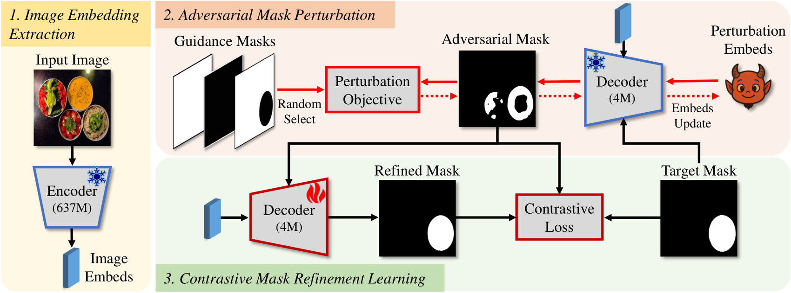
Unlike morphological operations that apply random geometric distortions, AMP runs FGSM in the embedding space of a frozen decoder. The resulting noise is image-conditional and lands on semantically hard regions — over-/under-segmentation, contextual confusion, and boundary imprecision — at only ~6 ms per update.
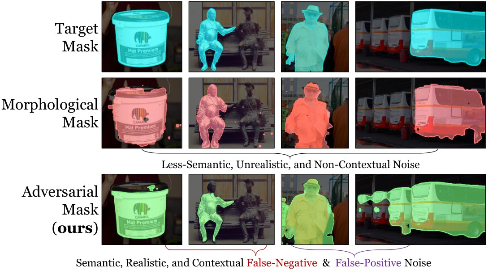
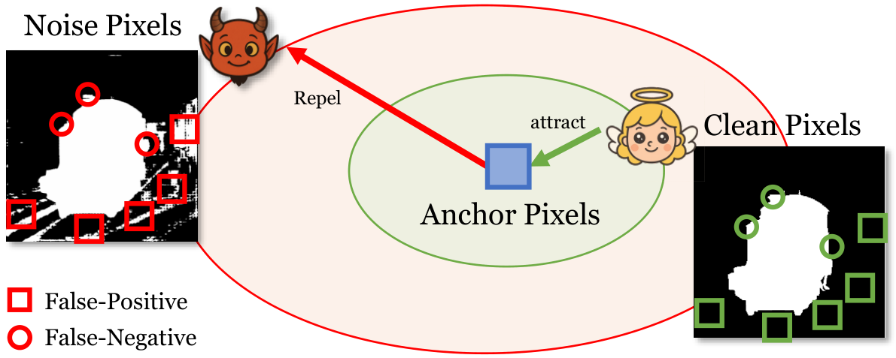
CMRL partitions pixels into true / success / failure × foreground / background regions and applies three objectives — intra-class consistency, inter-class contrast, and self-improvement bootstrapping — guiding failures toward already-corrected regions within the same image.
Pearson correlation between noise location and image edge/texture maps on LVIS val.
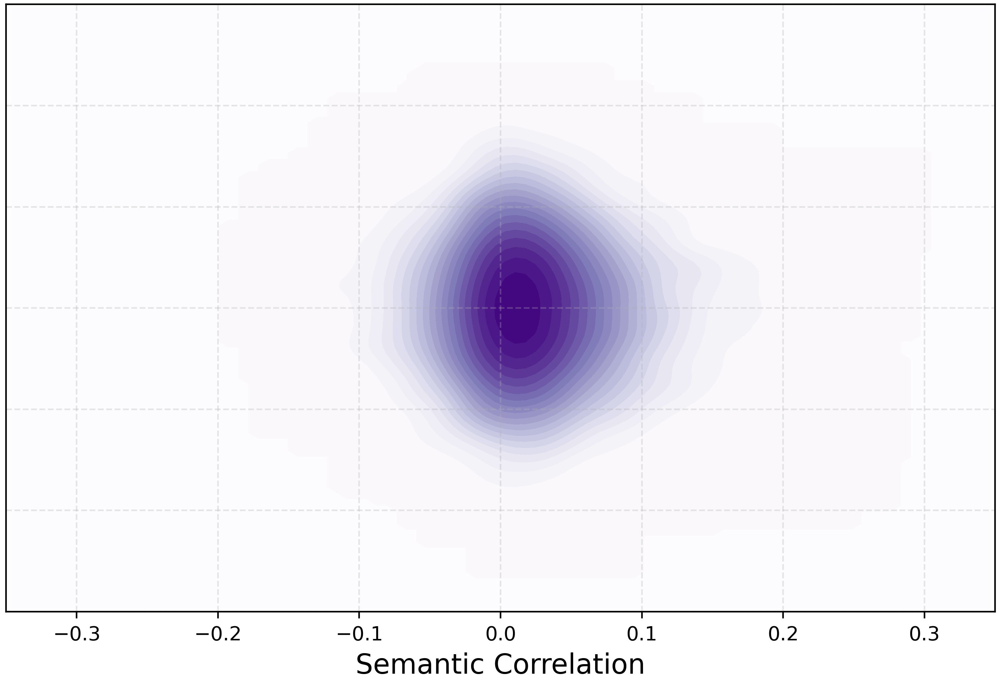
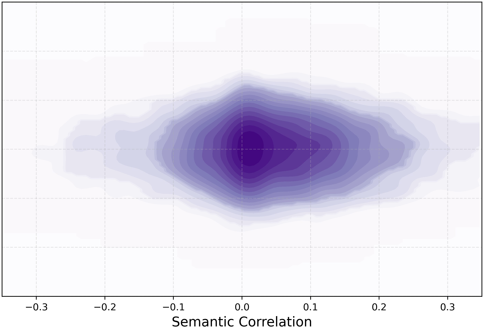
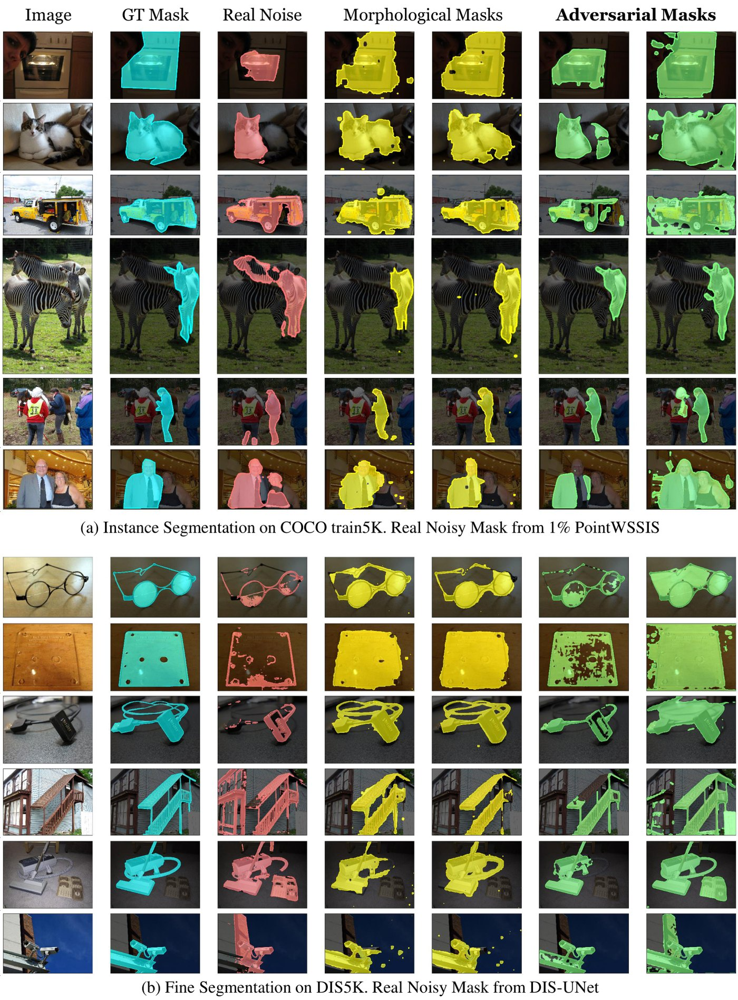
| Method | Supervision | APmask | APboundary |
|---|---|---|---|
| PointWSSIS | 𝓕 1% + 𝓟 99% | 12.6 | 6.3 |
| + SegRefiner | 14.7 | 9.5 | |
| + SAMRefiner | 21.8 | 16.4 | |
| + Phoenix (ours) | 28.7 +16.1 | 23.6 +17.3 | |
| PointWSSIS | 𝓕 5% + 𝓟 95% | 25.7 | 16.4 |
| + SegRefiner | 27.6 | 20.2 | |
| + SAMRefiner | 32.8 | 26.2 | |
| + Phoenix (ours) | 36.3 +10.6 | 30.2 +13.8 | |
| PointWSSIS | 𝓕 10% + 𝓟 90% | 30.2 | 20.4 |
| + SegRefiner | 31.7 | 23.8 | |
| + SAMRefiner | 36.6 | 29.7 | |
| + Phoenix (ours) | 38.9 +8.7 | 32.6 +12.2 |
𝓕: full mask annotations · 𝓟: object-center point annotations. Gains shown vs. the unrefined baseline.
| Base model | APmask | + Phoenix | APboundary | + Phoenix |
|---|---|---|---|---|
| Mask R-CNN (R50) | 39.8 | 46.9 +7.1 | 27.3 | 38.8 +11.5 |
| SOLO | 37.4 | 46.2 +8.8 | 24.7 | 37.7 +13.0 |
| Mask2Former | 46.8 | 50.6 +3.8 | 37.0 | 42.1 +5.1 |
| MaskDINO | 56.8 | 58.0 +1.2 | 46.5 | 48.6 +2.1 |
Selected results from Table 2. Phoenix consistently improves both classical and state-of-the-art segmentation architectures without modifying the base model.
| Base model | Refiner | IoU | Boundary 𝓕 |
|---|---|---|---|
| U-Net | — | 54.7 | 68.4 |
| + SegRefiner | 58.7 | 72.6 | |
| + Phoenix | 75.7 +21.0 | 84.4 +16.0 | |
| PSPNet | — | 55.8 | 69.8 |
| + Phoenix | 75.9 +20.1 | 84.8 +15.0 | |
| HRNet | — | 60.5 | 74.9 |
| + Phoenix | 76.0 +15.5 | 85.1 +10.2 | |
| ISNet | — | 66.1 | 79.6 |
| + Phoenix | 76.6 +11.0 | 85.9 +6.3 |
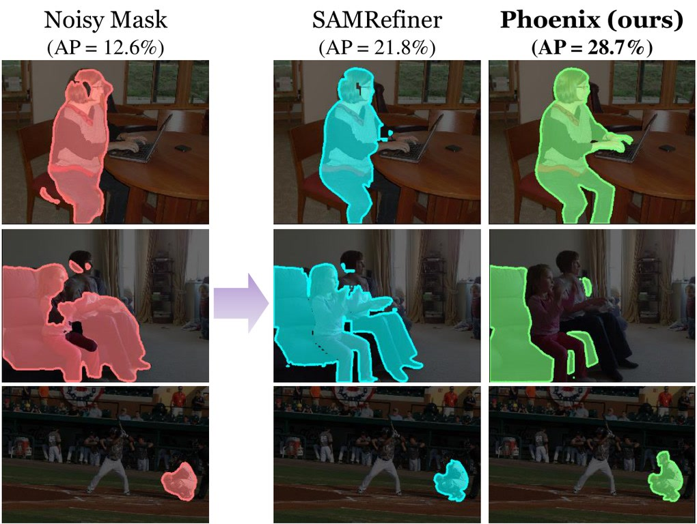
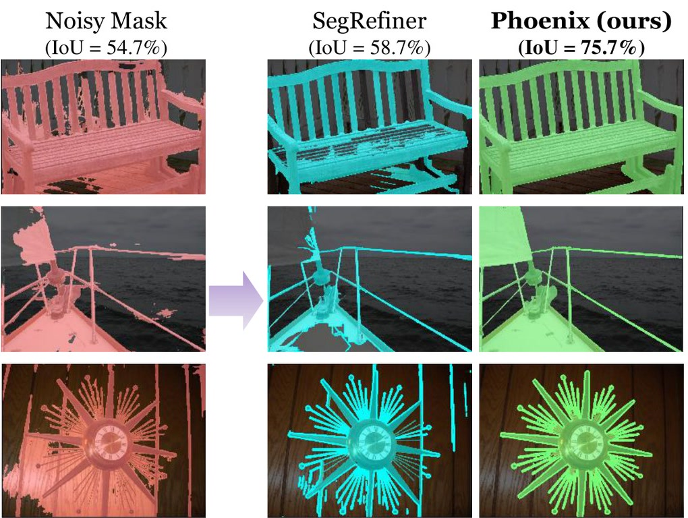
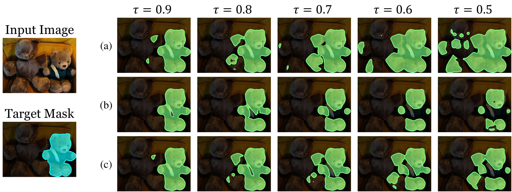
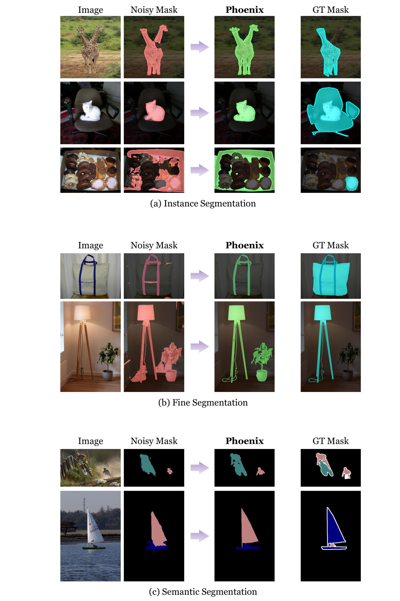
| AMP | CMRL | AP1 | IoU1 |
|---|---|---|---|
| ✗ | ✗ | 22.3 | 65.3 |
| ✓ | ✗ | 26.9 +4.6 | 71.5 +6.2 |
| ✗ | ✓ | 23.8 +1.5 | 67.8 +2.5 |
| ✓ | ✓ | 28.7 +6.4 | 75.7 +10.4 |
Combined gain (+10.4 IoU) exceeds the sum of parts — true synergy.
| Encoder | AP1 | VRAM | FPS |
|---|---|---|---|
| ViT-H | 28.7 | 4.9 GB | 3.5 |
| ViT-L | 26.6 | 4.1 GB | 5.6 |
| ViT-B | 22.4 | 2.8 GB | 12.4 |
| EfficientViT-XL1 | 28.0 | 0.8 GB | 45.2 |
EfficientViT-XL1 retains accuracy at a 17× memory cut and 45 FPS. Over 5 runs Phoenix is stable: AP1=28.7±0.5, AP2=46.9±0.3.
@inproceedings{kim2026phoenix,
title = {Learning from Adversity: Semantic-Aware Mask Refinement
through Adversarial Perturbation},
author = {Kim, Beomyoung and Hwang, Sung Ju},
booktitle = {European Conference on Computer Vision (ECCV)},
year = {2026},
}